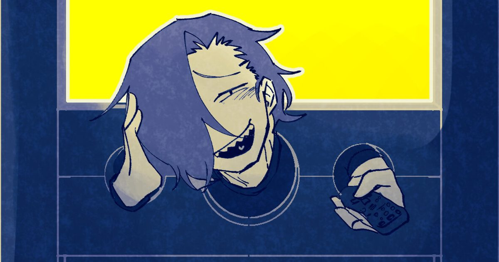

2026-10-27 · 概念深读
一档只有死刑犯能参加的综艺节目。规则是把对手的过去挖出来，剪成短视频，谁拿到的点赞多谁就能活着走出去。 这款叫《BUZZ or DIE》的点击式冒险游戏，10 月 27–28 日由讲谈社游戏实验室（Kodansha Game Creators Lab）通过 Steam 发行，支持英语、日语与简体中文，全程语音。 真正值得我们单独写一篇的，不是「死囚真人秀」这个外壳——那在日式 ADV 里已经不算新鲜——而是官方在介绍里轻描淡写写下的那一句：「即使完全没有视频制作经验也没问题，你只需要思考如何利用对手的信息，制作一张足够吸睛的封面图。」

先把外壳说清楚。玩家原本是这档节目的一名工作人员（CV：野水伊织），不知怎么就被推到了镜头前面，成了参赛者；和你组队的搭档叫佐木岛翔（CV：虎岛贵明）。赛制是两人一组，对手也是两人一组。 玩法是「潜入对手的心智世界」——在那个由记忆构成的空间里翻找，找出对方干过的脏事、想过的恶念、说不出口的背叛，然后把这些素材剪成一条短视频发出去。
赢的人得到赦免，并且可以许一个愿望。输的人不只是死——官方原话是「an eternity of humiliation as a slave android model」，死后会被做成奴隶型仿生人模型，供人永久羞辱。这个设定比单纯的处刑难受多了，我们后面会讲为什么。
参演的死刑犯阵容也写得相当用力：炸毁电视台的天才搞笑艺人，配一个让大型银行破产的天才少女黑客；发动政变的武器商人千金，配她的私人厨师——一个擅长烹制人肉料理的厨师；还有一个「不知为何被判处死刑的孩子」，配他的刑警父亲。三对搭档，三组完全不同的欲望结构。
试玩版已于 10 月 12 日上线，收录第 0 章（教学战）的完整流程，且同样全程语音；本作也参加了 10 月 19 日开启的 Steam 新品节。这个节奏我们放在最后说，因为它本身就是一条信息。
回头看那句官方说明，它的毒辣之处才显出来。
一款以「做短视频」为核心玩法的游戏，主动声明玩家不需要懂视频制作。它把整个创作过程砍掉，只留下最后一道工序：一张封面图。 你的胜负不取决于你讲了什么、论证是否成立、剪辑是否流畅，而取决于你在对手的人生里挑出了哪一块最有冲击力的碎片，以及你怎么把它摆在这张图上。
这不是偷懒，这是精准。现实里的短视频早就走到了这一步——决定一条内容生死的从来不是「内容」，是前 1.5 秒和那张封面。完播率、点击率、停留时长，所有这些指标共同指向同一个事实：观众在评判内容之前，先评判包装；而且他们评判包装的时间，短到不足以构成一次「评判」。 官方把这件事原样搬进了游戏，并且把它从「行业潜规则」提升为「胜负判定条件」。 你在这个游戏里做的每一次决策，都是在练习一件事：如何把一个活人的一生，压缩成一张能让人停下拇指的图。
第二处设计同样值得单独拎出来说：玩家原本是节目组的工作人员。 你不是自愿参赛的英雄，你是这个屠宰场的搭建者之一，然后被扔了进去。这个身份设定一步到位地完成了两件事——它给了玩家一个合理的「为什么要懂剪辑」的理由，也把整个游戏的道德位置钉死了：你从来不是旁观者，你只是从收钱的那一边，换到了挨刀的那一边。 在一个靠消费他人苦难运转的节目里，最合适的惩罚就是把消费它的人变成被消费的对象。
第三处，是失败的代价。前面说过，输的人要被做成奴隶仿生人，供人永久羞辱。 请注意这里的设计逻辑：死亡不是终点，被观看才是。这个节目不杀死你，它把你变成可以持续展示、持续被嘲笑的展品。 换句话说——它把「社死」做成了字面意义的永生。对一款 2026 年的游戏来说，这大概是你能想到的、对当下网络生态最刻薄的一句评语。
死亡游戏这个类型，日本人做了快二十年。我们可以把它排成一列，看看《BUZZ or DIE》到底挪动了哪一颗棋子。
| 作品 | 竞技内容 | 判定者 | 玩家立场 |
|---|---|---|---|
| 弹丸论破系列 | 学级裁判：用言弹击破谎言 | 同班同学集体投票 | 侦探——逼近真相者 |
| 主播女孩重度依赖 | 直播运营：涨粉、维持精神状态 | 关注者数量（抽象为数值） | 被观看者本人 |
| 黑镜《一千五百万个积点》 | 才艺表演换积点 | 评委 + 全场观众实时打分 | 表演者，且清醒地反抗过 |
| 逆转裁判 / 大逆转裁判 | 法庭举证，找出证词矛盾 | 法官（实为「正确与否」） | 辩护人——站在被告一边 |
| BUZZ or DIE | 把对手的过去做成封面图 | 匿名观众的点赞数 | 加害者——主动挖黑料的人 |
把「玩家立场」这一列从上往下读，会发现一个很清晰的走向：从「逼近真相的人」，到「被看的人」，再到「主动揭发别人的人」。 《BUZZ or DIE》把一个最不道德的位置交给了玩家，并且不打算给这个位置任何缓冲。 在《弹丸论破》里，你揪出凶手时是会难过的，但你知道自己在主持正义；在这里，你挖出来的东西越脏、越私密、越不堪，你的短视频越可能爆，你就越可能活下去。 游戏的胜利条件，就是要求你成为一个有效率的人渣。
再看判定者那一列。「投票」和「点赞」看起来差不多，其实差得很远。投票是一次表态，它需要你意识到自己在做决定，因此它附带责任；点赞不是表态，是反射。它不需要立场，不需要理由，不需要你为结果负责，只需要你的拇指在正确的位置停一下。 把生死押在投票上，你至少是在被审判；把生死押在点赞上，你只是没被看见。 这才是这个设定真正冷的地方——它让「不被看见」成为一种可以被执行死刑的罪名。
我们的观察 · 讲谈社在做一件漫画出版社迟早要做的事
发行方写着「Kodansha」，讲谈社。这不只是一个 logo。 日本的大型出版社这几年都在做同一道选择题：手里的 IP 如何在漫画、动画之外再有一次变现，而不用承担动画制作委员会那种量级的赌注。答案是游戏——尤其是低成本、小团队、概念优先的游戏。 「Game Creators Lab」这个名字本身就说明了它的性质：一个实验室，不是一个产品线。 它做的不是《进击的巨人》改编大作，而是一个能被三五百字讲清楚核心概念、在一个细分圈层里自然传播的作品。 《BUZZ or DIE》的全部成本都押在那个概念上，这恰恰是最省钱的押法。讲谈社不需要它卖五十万份，它需要它被人反复提起。
我们的观点 · 三种搭档配置，是三种「内容生产者」的画像
三对搭档不是随机凑的。搞笑艺人 + 黑客，是「会讲的人」配上「有料的人」；武器商千金 + 人肉厨师，是「有权的人」配上「会做的人」；被判死刑的孩子 + 刑警父亲，是「无罪之人」配上「执法之人」。 每一组都由「表达者」和「供给者」构成，而这正是内容产业链上的两个必要位置。 节目组不挑最强的罪犯，它挑的是最能产出内容的组合。这条隐藏逻辑如果游戏真的写进去了，那它比任何台词都更有说服力。
我们的案例对比 · 与《主播女孩重度依赖》的分岔口
最容易拿来类比的是《主播女孩重度依赖》（Needy Streamer Overload），两者都把「关注度」当作生命值。 但方向完全相反：在那款游戏里，你是被观看的人，玩家的焦虑来自「我不够好、没人看我」；在《BUZZ or DIE》里，你的焦虑来自「我要把别人弄到没人同情他的地步」。 前者批判的是自我商品化，后者批判的是对他人的商品化。同一枚硬币，前者朝内，后者朝外。 而后者的风险也更大：一旦游戏让玩家在挖掘他人创伤时感到爽而不是感到脏，它所有的批判就自动作废了。
我们的实验 · 一个可以自己验的判据
试玩版是免费的，收录完整第 0 章，建议做这样一个测试： 在你第一次制作封面图、选择要公开对手哪一段过去的时候，记录你的犹豫时间。 如果游戏让你在两三个选项之间反复权衡、并且其中至少有一个选项让你觉得「这个太过分了但效果一定好」——那它就是成功的，它把道德成本做成了真实存在的手感。 反之，如果你全程只想着「哪个更刺激就选哪个」，并且游戏没有用任何方式提醒你正在伤害一个具体的人，那么这套批判只是一层包装纸。 判断一款讽刺作品是不是真的在讽刺，看它有没有给玩家设置刹车。
我们的观察 · 「全程语音」对一个以文本为核心的游戏意味着什么
官方在定档公告里把「全流程语音」当成一个卖点单独讲，第二支 PV 专门用来「首次公开全体角色语音」。 这件事值得留意，因为它透露了这款游戏的重心并不在「读」。 潜入心智世界、翻找秘密这类玩法，天然是低语速、高密度的文本体验；一旦全部配上语音，节奏就被声优的表演接管了。 对一部群像剧来说这是加分项——死刑犯们互相咆哮的画面确实更有戏剧张力；但它同时意味着，玩家「剪辑」时的思考空间会被压缩。配音越满，留给你的沉默越少。这是一次明确的取舍，而且是有意的。
我们的评分
说到底，《BUZZ or DIE》最锋利的地方不在于它让你杀人，而在于它把「杀人」替换成了「让人不被看见」。 在一个所有人都在争夺注意力的时代，这大概是你能想象到的、最诚实也最不舒服的一种死刑。 它成不成立，取决于它有没有胆量让你在按下发布键的时候，手指真的迟疑那么一下。